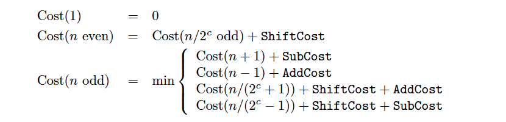
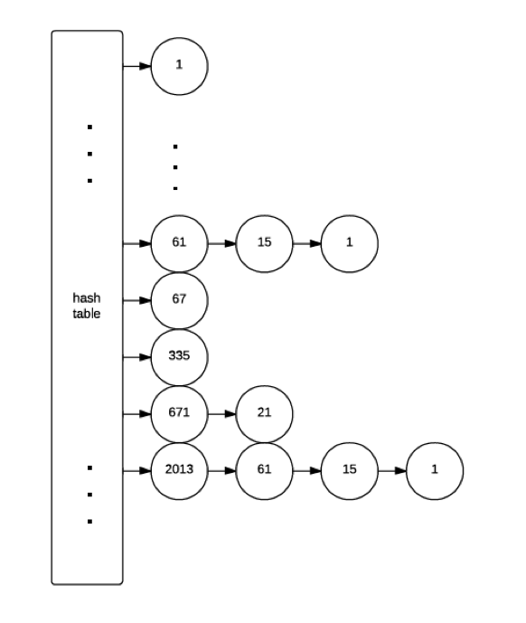

Help
Multiplication by an integer constant has many applications;
for example in digital signal processing, image processing,
multiple precision arithmetic, cryptography and in the design
of compilers. In certain applications, like the discrete cosine
transform (DCT), the implementation of integer constant
multiplications is the bottleneck as it largely determines the
speed of the entire process.
How to use it?
You can input a constant either by decimal or binary format.
If you check the check box first, and press compute, then it will show detail of two method of constant multiplication. First one is binary method which as an reference, second is Bernstein method.
the whole details of computing this constant.
But if you click again, it will only show about one line because this constant has already computed and saved in the hash table.
So it just be extracted from the hash table and show the instructions of multiplication. Thus if you have a series of constant numbers, you will find hash table is useful.
This project use the Bernstein Algorithm.
It is based on arithmetic operations; it doesn't explicitly use the binary
expansion of n. And one of the advantages is that it can be used with different costs for the different operations (the addition, the subtraction and the shifts). It
is a branch-and-bound algorithm, using the following formulas:

Where cost (n/(2^c+1)) or cost (n/(2^c-1))is integer.
This is the formula for Algorithm, which basically explains the factoring approach. We assume the constant is positive, and for the even constant, we make it become odd by shifting. And we factoring the odd number and find the lowest cost.
Especially, the cost (odd n) gives us a minimum cost of the four ways, which it tries n+1,n-1, n/(2^c+1), n/(2^c-1). For example, if n is the 4026, then it will first makeOdd(4026), and get the odd number 2013.
Then it will try to factoring 2013 with above formula( try 2013/(4-1), 2013/(4+1), 2013/(8-1),2013/(8+1)...until 2^c>(2013<<1)).
Then it will try 2014, 2012, which regard as a new value. So we try every possible factoring for c and get the all the cost.
Comparing with these cost and finds the minimum is the principle of this algorithm.
Because of time of shifting is small compared with addition or subtract. So we can assume that cost of shift is 0, and addition or subtraction is 1.
Note that if n is odd, then n+1 and n-1 are even, therefore adding or subtracting 1 is
always associated with a shift. As a consequence, assuming that the add and subtract costs
are equal, we get back to our formulation.
The minimal cost and an associated sequence are searched for by exploring the tree.
But there will be redundant searches. A �rst optimization consists in avoiding them with a
memoization: results (for odd numbers only) are recorded in a hash table.
Sometimes, deep in a search, the cost associated with the partial path becomes greater
than the current cost2; thus it is clear that this is a fruitless path, and it is useless to go
deeper: we prune the tree. Moreover, in order to avoid using fruitless paths too often, each
time we come across a node, a lower bound of its cost is associated with it.

The implementation detail is, when we start factoring, we will get node 2013,671,335,67,33,11,5,1, and each will try to factoring. Thus Like the figure shows, we will get a lot of node during the factoring and this procedure is recursively.
We always selected the lowest cost when we want to update the node's data. Because we always get_node and try an possible factoring that let it have the lowest cost. Then the final result for the input constant will be the best instructions that use least instructions.
The approach 1 just convert the original binary sequence, to reduce the operation.
And then use the binary method to show the process. The approach 2 is the Bernstein Algorithm.
Reference
1. Multiplication by an Integer Constant by Vincent Lefèvre
2. Multiplication by Integer Constants by Robert Bernstein